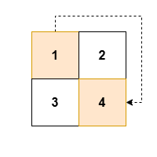
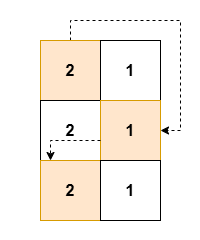
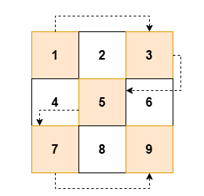

| Category | Difficulty | Likes | Dislikes |
|---|---|---|---|
| Algorithms | Easy | 71 | 11 |
array | matrix | simulation
facebook
You are given an m x n 2D array grid of positive integers.
Your task is to traverse grid in a zigzag pattern while skipping every alternate cell.
Zigzag pattern traversal is defined as following the below actions:
(0, 0).Note that you must skip every alternate cell during the traversal.
Return an array of integers result containing, in order, the value of the cells visited during the zigzag traversal with skips.
Example 1:
Input: grid = [[1,2],[3,4]]
Output: [1,4]
Explanation:

Example 2:
Input: grid = [[2,1],[2,1],[2,1]]
Output: [2,1,2]
Explanation:

Example 3:
Input: grid = [[1,2,3],[4,5,6],[7,8,9]]
Output: [1,3,5,7,9]
Explanation:

Constraints:
2 <= n == grid.length <= 502 <= m == grid[i].length <= 501 <= grid[i][j] <= 2500